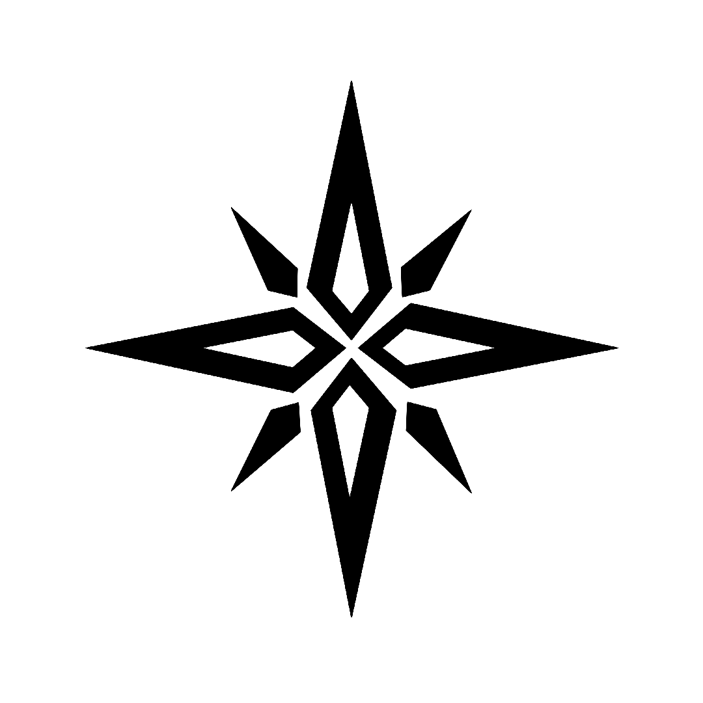

Four Star Shurk
Logo ini menggambarkan empat bintang yang menyatu bersama beberapa serpihan. Walaupun ada bagian yang berlubang, serpihan lain bisa mengisinya. Maknanya: perbedaan suku, kulit, ras, agama, dan latar tetap bisa bersatu untuk tujuan yang sama.
Dipakai sejak komunitas beralih dari Star 4x' ke FrStrax' sampai pertengahan Agustus.